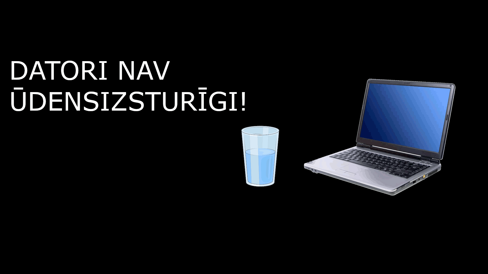

Individuālā tēma

Uzdevums
Gada sākuma mums tika izdalītas tēmas par kurām bija jāveido .gif
formāta brīdinošu animāciju; man tika iedota tēma "Datorsistēmu fiziskā drošība"
Tēmas izklāsts
Ikdienā mes sastopamies ar datoriem, un lielāktoies mēs piemirstam cik trausli tie ir.
Ja datoram kāds no iekšejiem komponentiem nestrādā, tad visa sistēma nevarēs funkcionēt.
Tas var pat būt bīstami. Pieskaroties saplīsušam elektrības vadam, sekas var būt bargas,
tāpēc vienmēr jāparliecinās, ka nekas nav bojāts. Šīs detaļas uzreiz vajag nomainīt, lai
turpinātu droši darboties. Vēl jaatceras būt uzmanīgam ēdot un dzerot pie datoriem.
Ja uzzlīs ūdens virsū, tad detaļas tiek neatgriezeniski bojātas.
.gif animācija
Manuprāt, daudzi aizmirst, cik bīstami ir turēt atvērtu ūdens pudeli blakus datoram,
tādēļ es izdomāju uztaisīt manu gif par to.

Reklāma
Kad animācija bija pabeigta, mums vajadzēja sākt veidot dokumentālu video par kuba veidošanu, kurā parādītos reklāmas fragments par mūsu iedoto tēmu.
Avoti
Šie ir mani izmantotie avoti: